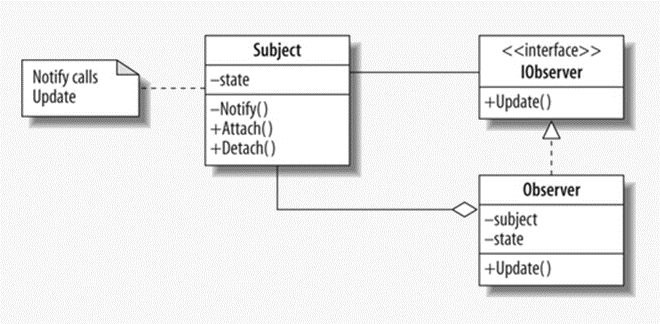
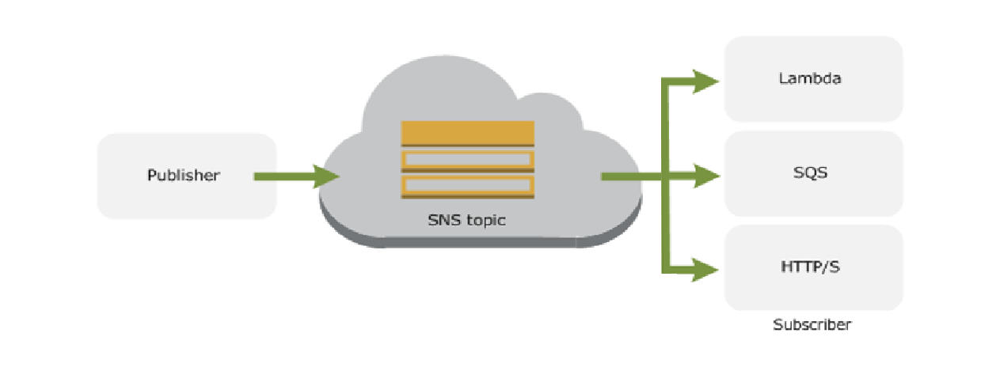
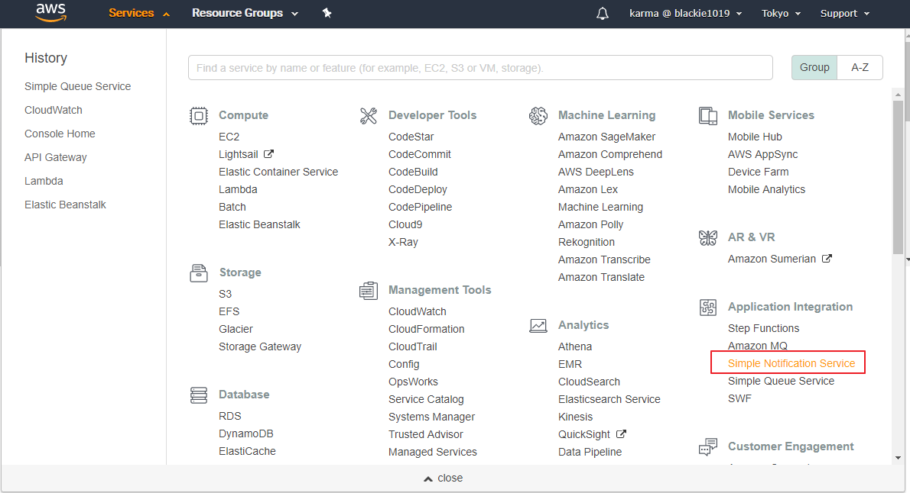
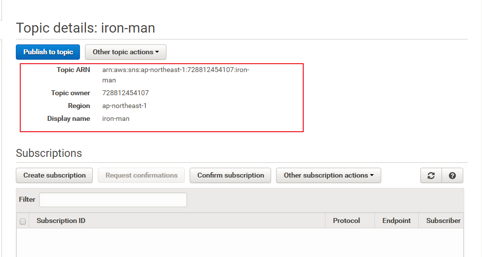
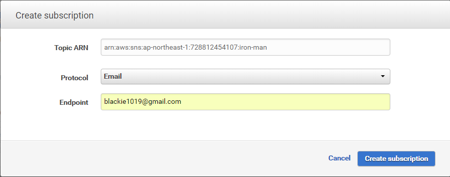
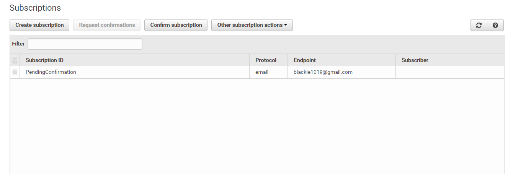
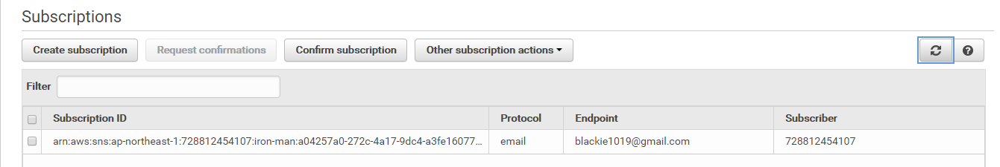

30天鐵人賽介紹 AWS 雲端世界 - 22: 透過 SNS 實作主動式的推播/訂閱通知架構
在討論 SNS 之前，要先了解一下 Pub/Sub 這個設計模式。
Pub/Sub Design Pattern
發佈/訂閱 (Pub/Sub)模式，遵循了經典的觀察者設計(Observer Pattern)模式:
- 主題 + 觀察器 = 觀察器模式
- 觀察器模式定義了物件之間的一對多關係。因此，當一個物件發生裝態改變，有訂閱該訊息的相依者都會收到通知並自動做出對應回應

Interface
IObservable
提供 Subscribe 介面接口，繼承者必須完成實作定義當接收到指定訊息時該做什麼
IObserver
提供 OnNext, OnError, OnCompleted 三個介面接口給繼承者實作三個事件發生時該做什麼
- OnNext : 收到正常訊息時
- OnError : 收到異常訊息時
- OnCompleted : 收到完成觀察訊息時
Class
Subject
- 實作IObservable，使其物件具備被觀察的能力
- 必須定義當整個物件生命流程結束時的dispose 實作
Observer
- 實作IObserver，使其具備觀察的能力。可以因其喜好過濾訂閱資訊
- 觀察者可根據訂閱的內容，定義收到訊息時提供對應的實作
- 觀察者也必須定義錯誤發生與全部完成時的實作
Flow
雖然有人會說 Pub/Sub 與 Observer Pattern 還是有點不同，但若是對於這樣的開發方式應用在模組與模組之前感興趣的可以參考一下 Reactive Programming，而這邊也稍微廣告一下先前在活動中介紹過的應式程式開發之 .NET Core 應用 ，裡面有不少 Reactive Programming 的價值與 Observer Pattern 架構跟為何要怎樣做。
What is SNS
而 Simple Notification Service (SNS) 是一個提供 Pub/Sub 功能的雲端服務，可支援網頁應用程式與行動通知服務等應用。

由上圖可以簡單地看到，SNS 不只可以串通先前介紹的 Lambda 與 SQS 服務，我們也可以單獨使用這項服務做到 HTTP/S的推播訂閱，讓這項服務能獨立的被使用，如：同裝置上的應用程式和最終使用者可以透過行動推送通知 (Apple、Google 和 Kindle Fire 裝置)、HTTP/HTTPS、電子郵件/電子郵件 JSON、SMS 等。
訂價方面根據發佈通知的數量、傳遞通知的數量以及用於管理主題和訂閱的任何額外 API 呼叫的數量付費，可參考Amazon SNS 定價
官方是有強調傳送一百萬則行動推送通知需要 1.00 USD (每百萬則發佈 0.50 USD，加上每百萬則行動推送通知傳輸 0.50 USD)。而使用 SNS 主題一次將相同訊息廣播給多個收件人時，您的有效定價甚至可以低於每百萬則行動推送通知 1.00 USD。
而如果跟筆者依樣是使用 SNS 免費方案，每月的前一百萬則推送通知 (發佈和傳輸) 免費，所以可以大膽試用的。
開發使用上與 SQS 依樣容易上手，大多數情況下，開發人員只需三個 API (CreateTopic、Subscribe 和 Publish) 就可以開始使用 SNS 服務。
SNS 與 SQS 相同也有雷同訊息重寄的設定，而發佈端跟訂閱端可以分開設定也可以單獨設定單一訂閱端：

接下來我們就實際帶大家來看如何撰寫相關程式。
Hands on Lab
首先先登入 [AWS Console] 後在中間的輸入框查詢 Simple Notification Service ，或是透過左上角的 Services 點選到 Application Integration 下的 Simple Notification Service 服務：

接著直接建立服務：
成功建立會拿到一個包含主題(topic)的 ARN，這是我們後續訂閱者要加入訂閱時所需要填入的欄位。

Subscriber
首先我們建立幾種不同類型的個訂閱者：
- Lambda(.NET Core + Lambda )
- HTTP/S(Lambda + API Gateway)
Create Email Subscriber
這邊從介面可以看到可新增的訂閱設定有以下：
首先我們先建立 email 類型訂閱，建立後記得去信箱按下同意即可：


完成後記得回來頁表確認狀態：

當我們從頁面發送推播進行測試即可收到信件:
Create Lambda Subscriber
這邊要參考先前介紹如何使用 .NET Core + Lambda + API Gateway 建立服務的過程。
設定 Lambda Subscriber 的方式可以介面步驟完成：
也可透過設定檔添加指定 arn 設定：
serverless.yml
1 | functions: |
稍微調整一下程式碼，這邊跟先前比較不一樣的地方是記得要紀錄 request 的 Headers ，而非 Body:
Handler.cs
1 | using System; |
完成後記得要打包產生zip檔案並推送至 Lambda 服務內：
dotnet lambda package --configuration release --framework netcoreapp1.0 --output-package bin/release/netcoreapp1.0/deploy-package.zip
sls deploy -y
無論透過上述哪種方法只要在 CloudWatch 這邊看到以下訊息代表測試接通：
Create HTTP/S(Lambda+ API Gateway) Subscriber
接著我們將上一個做好的 Lambda 加入 API Gateway 的接口，並在設定打開 http 與指定的路由：
1 | functions: |
修改完後記得一樣要重新打包並推送至 Lambda 服務內：
dotnet lambda package --configuration release --framework netcoreapp1.0 --output-package bin/release/netcoreapp1.0/deploy-package.zip
sls deploy -y
以上建立一個簡單的 Lambda 服務將收到的 request 內容放到 CloudWatch 記錄起來
Publisher
剛剛前面有特到我們可以在設定好一個訂閱即透過介面發送通知進行測試：

接著我們還是用 node.js 丟出一則訊息給剛剛設定好的三者接收：
index.js
1 | // Load the SDK for JavaScript |
完成上訴程式碼後執行即可看到執行內容(注意 RequestId):
接著確認 Lambda 訂閱者成功收到通知了：
以上範例原始碼請至AWS SNS sample code